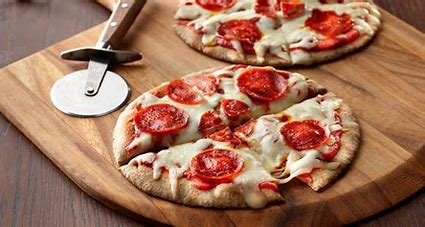

Pita Pizza

Description
This is a recipe to make small pizzas with pita bread.
Ingredients
- Pita bread
- Cheese
- Pizza Sauce
- Pepperoni
Steps
- Preheat the oven to 450 degrees Fahrenheit
- Place the pita bread on a cutting board or flat surface
- Spread tomato sauce evenly across the pita bread
- Sprinkle cheese over the sauce
- Place pepperonis on top of the cheese
- Bake in the oven for 6-8 minutes depending on desired crunchiness
- Remove from oven and let them cool off
- Enjoy!